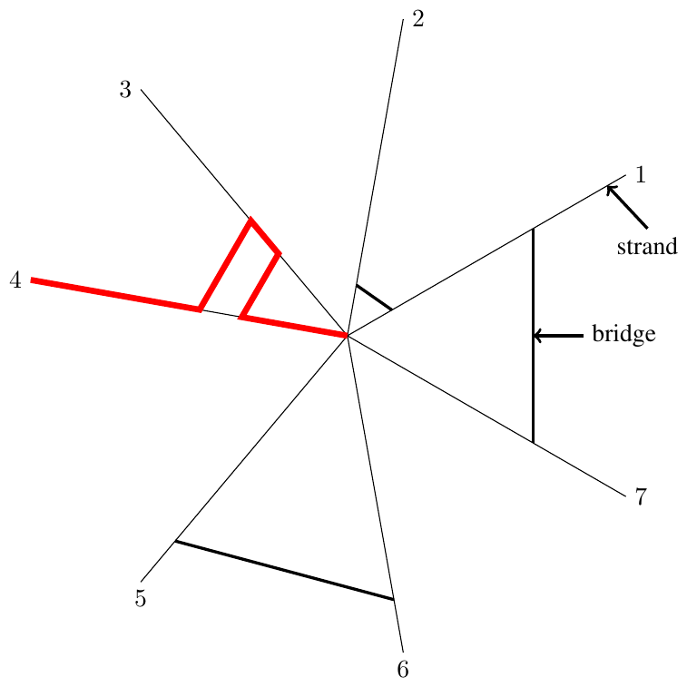

ICPC World Finals 2021 · Problem I
Charlotte the spider sits at the center of her spiderweb, which consists of a series of silken straight strands that go from the center to the outer boundary of the web. Charlotte’s web also has bridges, each of which connects two adjacent strands. The two endpoints of a bridge always have the same distance to the center of the spiderweb.
When Charlotte has finished a late-night feasting in the center and wants to retreat to some corner, she walks to the edge on autopilot. To do this, she picks a starting strand, and walks along it until she meets the first bridge on that strand. She will cross the bridge and go to the other strand, and then keeps walking outwards until she meets another bridge. Then she will cross that bridge, and repeat this process, until there are no more bridges on the current strand, and then she will walk to the end of the current strand. Note that Charlotte must cross all the bridges that she meets. Figure I.1 illustrates one path Charlotte could take.
Charlotte’s favorite corner to sleep in during the daytime is at the end of strand s. For each possible starting strand, she wants to know the minimum number of bridges to add to the original web in order to end at s. Charlotte can add a bridge at any point along the strand, as long as the added bridge does not touch any other bridge. The two endpoints of any added bridge must have the same distance to the center of the spiderweb, and the bridge must connect two adjacent strands.

The first line of input has three integers n, m, and s, where n (3 ≤ n ≤ 200 000) is the number of strands, m (0 ≤ m ≤ 500 000) is the number of bridges, and s (1 ≤ s ≤ n) is Charlotte’s favorite strand. Strands are labeled from 1 to n in counterclockwise order. Each of the remaining m lines contains two integers d and t describing a bridge, where d (1 ≤ d ≤ 109) is the bridge’s distance from the center of the spiderweb and t (1 ≤ t ≤ n) is the first strand of the bridge in counterclockwise order. Specifically, if 1 ≤ t < n, then the bridge connects strands t and t+1. If t = n, then the bridge connects strands 1 and n. All bridge distances d are distinct.
Output n lines, where the ith line is the minimum number of bridges Charlotte needs to add in order to end at strand s after walking on autopilot from strand i.
7 5 6 2 1 4 3 6 3 8 7 10 5
2 1 1 1 0 1 2
4 4 2 1 1 2 2 3 3 4 4
1 1 0 1